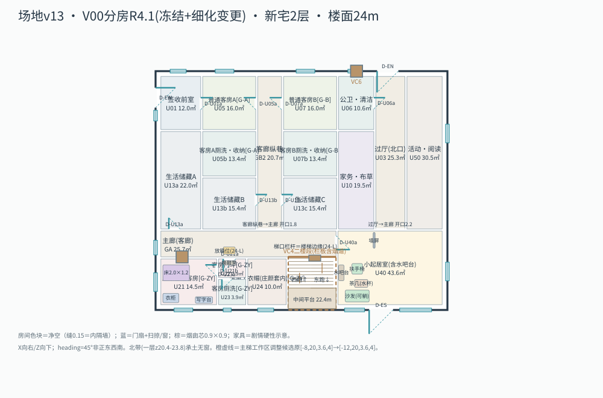
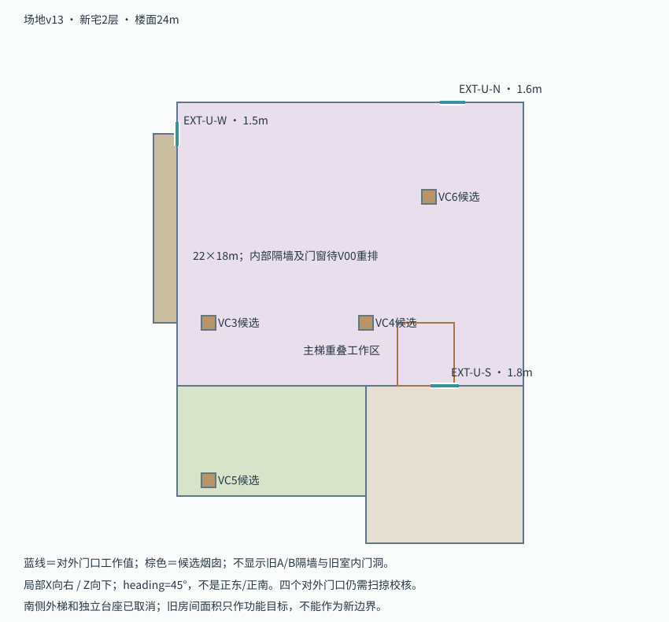
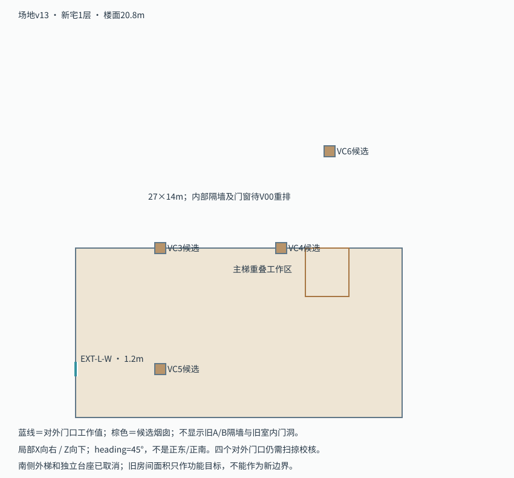
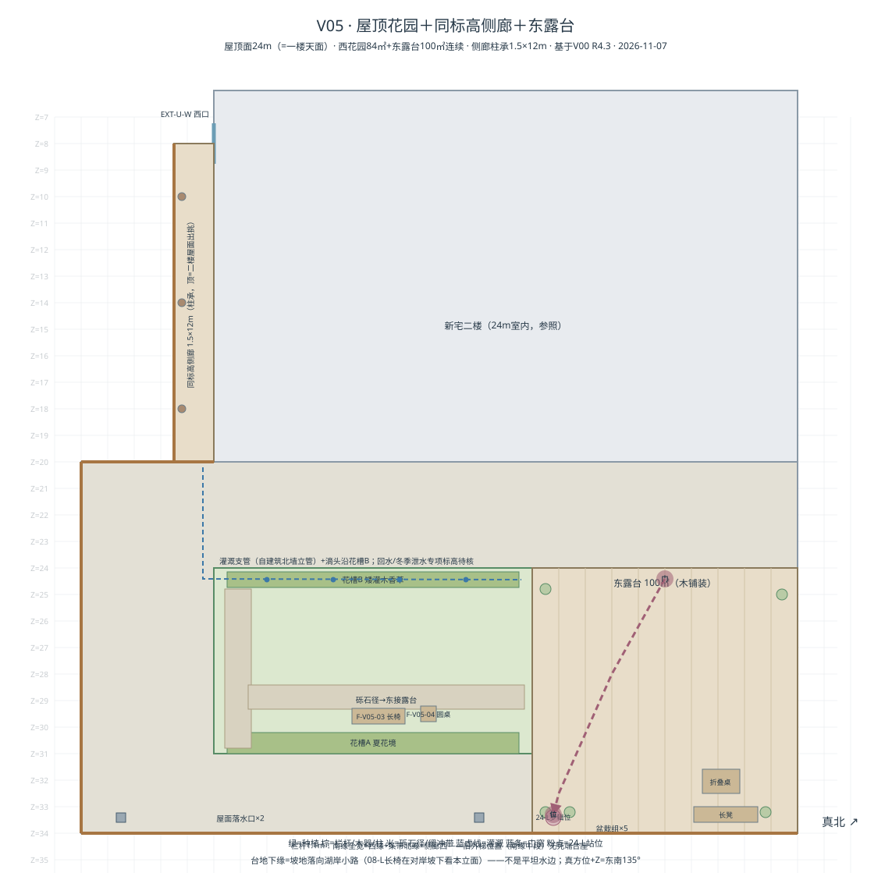
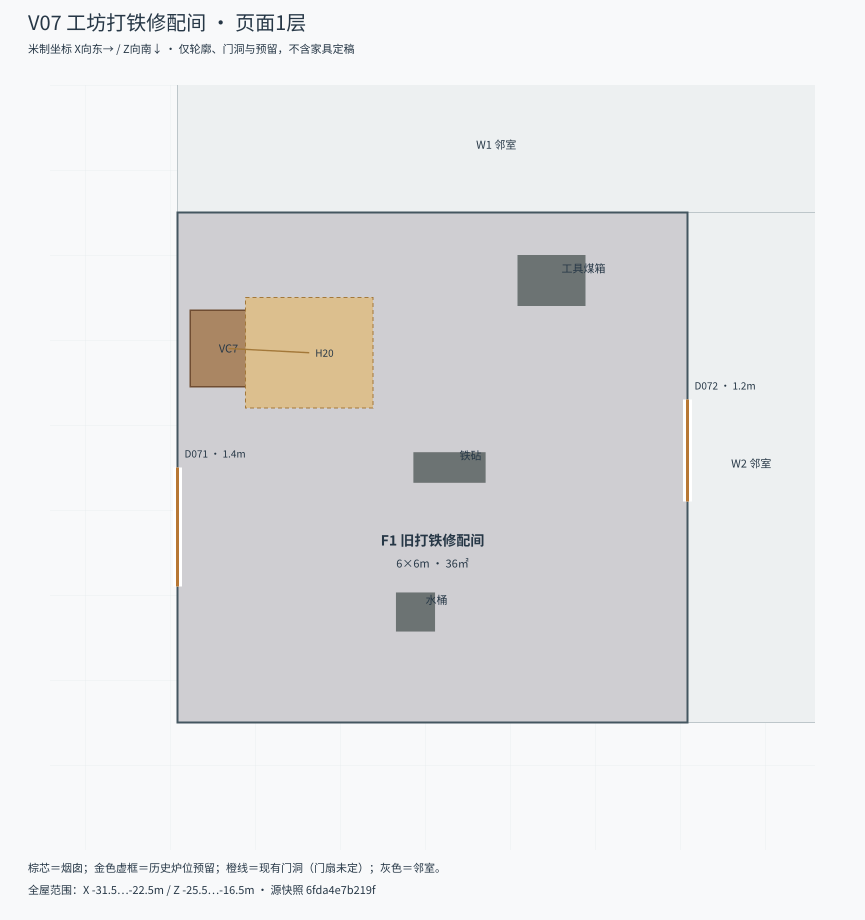

已验收（2026-11-07）· 门窗表冻结 · V01—V05可细化
V00 新宅错台两层联合分房

R4：二楼三客房G-ZY/G-A/G-B（14/16/16㎡+套内厕洗收纳）上图，无主卧，真北换算纠正；JSON resubmission=R4，见 R4交付说明。
打开任务 / 复制需求与正文 · 一层隔墙图 · 主梯剖面2026-11-07阶段收尾：V06数字机房、V07打铁修配间本轮只保留位置、功能和既有预留；没有必须补画的完整正文内景，暂不开展精细室内设计。现存V00及V01—V05交付、退回记录与验收标记原样保留，本次Git归档不提升其验收状态。
已同步坡地错台、二楼签收、同标高花园与新版沿湖景观。正文未改。
新宅一楼20.8m、二楼24m；北侧工坊/老宅25.2m。短廊经8级台阶接二楼。05-L签收改在二楼西口，后台S1仍在生产院。西花园84㎡、东露台100㎡，二楼西侧同标高侧廊进入；南侧外梯及独立台座取消。
主路约725m、宽3.2m，可慢骑；临崖支路步行；坡上果园212株。宅旁外景按场地v13，附楼工作间位置另定。
已验收（2026-11-07）· 门窗表冻结 · V01—V05可细化

R4：二楼三客房G-ZY/G-A/G-B（14/16/16㎡+套内厕洗收纳）上图，无主卧，真北换算纠正；JSON resubmission=R4，见 R4交付说明。
打开任务 / 复制需求与正文 · 一层隔墙图 · 主梯剖面V01已提交待验收（2026-11-07）
G-ZY套间细化：寝14.5+门斗+厕洗3.9+新增U24画角·衣帽10.0（V00缺口补全）；反锁/放箱/壁炉芯校核，见 V01交付说明。

普通客房自建成起用于待客；睡眠、收纳、写字、反锁与门外放箱，连同门斗和专用厕洗整体设计。
打开任务 / 复制需求与正文V02已提交待验收（2026-11-07）
起居室家具深化+主梯施工级（18级/栏板烟道）+南露台栏杆+24-L连续走位图（V02b），见 V02交付说明。

24-L整组动作联合设计：隔门说话、走廊窗、梯口拥抱、沙发休息、玻璃门到露台、返回看电影。
打开任务 / 复制需求与正文V03已提交待验收（2026-11-07）
餐桌六人对坐+服务线不穿坐席+VC5壁炉深化+南扩对齐33.6（缺口补全），见 V03交付说明。

20-L午餐、岗位文件与住房谈话、离席拿外套、拉住手腕及让路，统一校核桌椅、门和服务退出。
打开任务 / 复制需求与正文V04已提交待验收（2026-11-07）
值班窗W-V04修正（原与西口重叠）+签收桌/暂存/合伞位+移交动线（前室→纵巷→主廊→过厅→北口短廊→S1），见 V04交付说明。

二楼西口签收、门廊和值班窗，与生产院归档后库分开定义。
打开任务 / 复制需求与正文V05已提交待验收（2026-11-07）

屋顶面24m：西花园84㎡（花槽×2/砾石径/长椅）+东露台100㎡（木铺装/长凳/盆栽）连续；侧廊柱承1.5×12m；栏杆真实临空边；灌溉/落水/分期注记，见 V05交付说明。交互页：V05细化布局.html
打开任务 / 复制需求与正文本轮不细化：保留既有工业组预留

39-L明确私人Agent主机在小博物馆及停机留存；重点是机房用途和维护关系，没有完整机房内景桥段。
打开任务 / 复制需求与正文本轮不细化：保留既有工业组预留

按已落定的36㎡砖砌修配间细化打铁炉、烟罩、铁砧、工具煤箱和人员操作空间。
打开任务 / 复制需求与正文当前场地SHA-256：99b741103d34cb46；旧平地交接包只在log中归档，不作为现行几何输入。